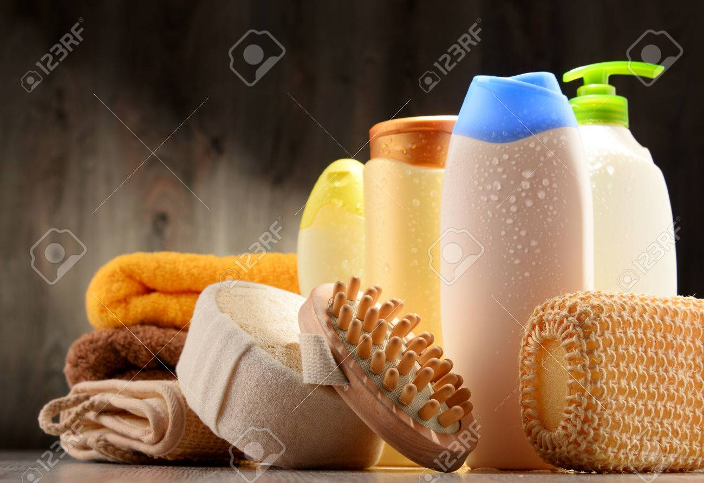
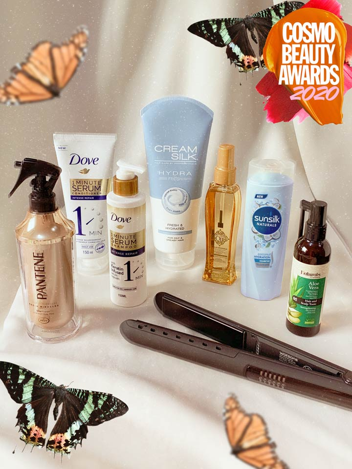
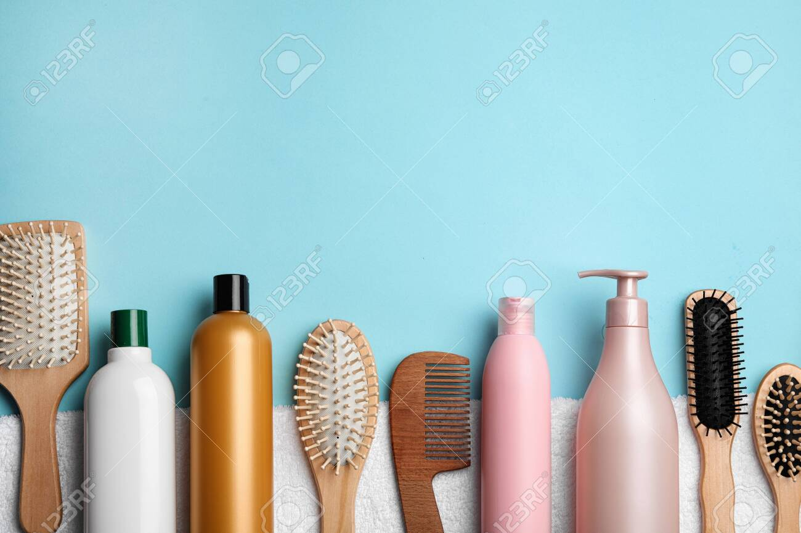

Cosmetics for hair: • Shampoos • Depilatories • Shaving soaps & creams • Hair dyes • Anti dandruff products • Hair tonics & conditioners • Hair wave sets, lacquers & rinses • Hair grooming preparations • Permanent hair waving preparations & hair straighteners • Hair bleaches & hair colorants Classification of Cosmetic ProductsClassification of Cosmetic Products contd.contd. 7

Hair cosmetics are an important tool that helps to increase patient's adhesion to alopecia and scalp treatments. This article reviews the formulations and the mode of action of hair cosmetics: Shampoos, conditioners, hair straightening products, hair dyes and henna; regarding their prescription and safetiness. The dermatologist's knowledge of hair care products, their use, and their possible side effects can extend to an understanding of cosmetic resources and help dermatologists to better treat hair and scalp conditions according to the diversity of hair types and ethnicity.

There is a wide range of cosmetics available for both grooming and adorning scalp hair. These products include shampoos, conditioners, styling aids, dyes, permanent waving lotions, and straighteners. Proper use of these products can improve the cosmetic appearance of the hair, whereas overuse or misuse of products, especially those that chemically color, curl, or straighten the hair, can result in significant cosmetic and dermatologic problems.